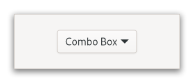

Gtk.ComboBox¶
Example¶
- Subclasses
Methods¶
- Inherited
Gtk.Widget (181), GObject.Object (37), Gtk.Accessible (15), Gtk.Buildable (1), Gtk.CellEditable (3), Gtk.CellLayout (9)
- Structs
class |
|
class |
|
class |
|
class |
|
|
|
|
|
|
|
|
|
|
|
|
|
|
|
|
|
|
|
|
|
|
|
|
|
|
|
|
|
|
|
|
Virtual Methods¶
- Inherited
Gtk.Widget (25), GObject.Object (7), Gtk.Accessible (6), Gtk.Buildable (9), Gtk.CellEditable (3), Gtk.CellLayout (9)
|
|
|
|
|
Properties¶
- Inherited
Name |
Type |
Flags |
Short Description |
|---|---|---|---|
r/w/en |
|||
r/w/en |
|||
r/w/en |
|||
r/w/en |
|||
r/w/en |
|||
r/w/co |
|||
r/w/en |
|||
r/w/en |
|||
r/w/en |
|||
r/w/en |
|||
r |
Signals¶
- Inherited
Name |
Short Description |
|---|---|
Emitted to when the combo box is activated. |
|
Emitted when the active item is changed. |
|
Emitted to allow changing how the text in a combo box’s entry is displayed. |
|
Emitted to move the active selection. |
|
Emitted to popdown the combo box list. |
|
Emitted to popup the combo box list. |
Fields¶
- Inherited
Name |
Type |
Access |
Description |
|---|---|---|---|
parent_instance |
r |
Class Details¶
- class Gtk.ComboBox(**kwargs)¶
- Bases
- Abstract
No
- Structure
A
GtkComboBoxis a widget that allows the user to choose from a list of valid choices.An example
Gtk.ComboBoxThe
GtkComboBoxdisplays the selected choice; when activated, theGtkComboBoxdisplays a popup which allows the user to make a new choice.The
GtkComboBoxuses the model-view pattern; the list of valid choices is specified in the form of a tree model, and the display of the choices can be adapted to the data in the model by using cell renderers, as you would in a tree view. This is possible sinceGtkComboBoximplements the [iface`Gtk`.CellLayout] interface. The tree model holding the valid choices is not restricted to a flat list, it can be a real tree, and the popup will reflect the tree structure.To allow the user to enter values not in the model, the [property`Gtk`.ComboBox:has-entry] property allows the
GtkComboBoxto contain a [class`Gtk`.Entry]. This entry can be accessed by calling [method`Gtk`.ComboBox.get_child] on the combo box.For a simple list of textual choices, the model-view API of
GtkComboBoxcan be a bit overwhelming. In this case, [class`Gtk`.ComboBoxText] offers a simple alternative. BothGtkComboBoxandGtkComboBoxTextcan contain an entry.- CSS nodes
`` combobox ├── box.linked │ ╰── button.combo │ ╰── box │ ├── cellview │ ╰── arrow ╰── window.popup ``
A normal combobox contains a box with the .linked class, a button with the .combo class and inside those buttons, there are a cellview and an arrow.
`` combobox ├── box.linked │ ├── entry.combo │ ╰── button.combo │ ╰── box │ ╰── arrow ╰── window.popup ``
A
GtkComboBoxwith an entry has a single CSS node with name combobox. It contains a box with the .linked class. That box contains an entry and a button, both with the .combo class added. The button also contains another node with name arrow.- Accessibility
GtkComboBoxuses theGtk.AccessibleRole.COMBO_BOXrole.Deprecated since version 4.10: Use [class`Gtk`.DropDown] instead
- classmethod new()[source]¶
- Returns
A new
GtkComboBox- Return type
Creates a new empty
GtkComboBox.Deprecated since version 4.10: Use [class`Gtk`.DropDown]
- classmethod new_with_entry()[source]¶
- Returns
A new
GtkComboBox- Return type
Creates a new empty
GtkComboBoxwith an entry.In order to use a combo box with entry, you need to tell it which column of the model contains the text for the entry by calling [method`Gtk`.ComboBox.set_entry_text_column].
Deprecated since version 4.10: Use [class`Gtk`.DropDown]
- classmethod new_with_model(model)[source]¶
- Parameters
model (
Gtk.TreeModel) – aGtkTreeModel- Returns
A new
GtkComboBox- Return type
Creates a new
GtkComboBoxwith a model.Deprecated since version 4.10: Use [class`Gtk`.DropDown]
- classmethod new_with_model_and_entry(model)[source]¶
- Parameters
model (
Gtk.TreeModel) – AGtkTreeModel- Returns
A new
GtkComboBox- Return type
Creates a new empty
GtkComboBoxwith an entry and a model.See also [ctor`Gtk`.ComboBox.new_with_entry].
Deprecated since version 4.10: Use [class`Gtk`.DropDown]
- get_active()[source]¶
- Returns
An integer which is the index of the currently active item, or -1 if there’s no active item
- Return type
Returns the index of the currently active item.
If the model is a non-flat treemodel, and the active item is not an immediate child of the root of the tree, this function returns
gtk_tree_path_get_indices (path)[0], wherepathis the [struct`Gtk`.TreePath] of the active item.Deprecated since version 4.10: Use [class`Gtk`.DropDown]
- get_active_id()[source]¶
-
Returns the ID of the active row of self.
This value is taken from the active row and the column specified by the [property`Gtk`.ComboBox:id-column] property of self (see [method`Gtk`.ComboBox.set_id_column]).
The returned value is an interned string which means that you can compare the pointer by value to other interned strings and that you must not free it.
If the [property`Gtk`.ComboBox:id-column] property of self is not set, or if no row is active, or if the active row has a
NoneID value, thenNoneis returned.Deprecated since version 4.10: Use [class`Gtk`.DropDown]
- get_active_iter()[source]¶
- Returns
a
Gtk.TreeIterorNoneif there is no active item- Return type
Gtk.TreeIterorNone
Returns the iter for the current active item, if it exists.
Deprecated since version 4.10: Use [class`Gtk`.DropDown]
- get_button_sensitivity()[source]¶
- Returns
Gtk.SensitivityType.ONif the dropdown button is sensitive when the model is empty,Gtk.SensitivityType.OFFif the button is always insensitive orGtk.SensitivityType.AUTOif it is only sensitive as long as the model has one item to be selected.- Return type
Returns whether the combo box sets the dropdown button sensitive or not when there are no items in the model.
Deprecated since version 4.10: Use [class`Gtk`.DropDown]
- get_child()[source]¶
- Returns
the child widget of self
- Return type
Gtk.WidgetorNone
Gets the child widget of self.
Deprecated since version 4.10: Use [class`Gtk`.DropDown]
- get_entry_text_column()[source]¶
- Returns
A column in the data source model of self.
- Return type
Returns the column which self is using to get the strings from to display in the internal entry.
Deprecated since version 4.10: Use [class`Gtk`.DropDown]
- get_has_entry()[source]¶
- Returns
whether there is an entry in self.
- Return type
Returns whether the combo box has an entry.
Deprecated since version 4.10: Use [class`Gtk`.DropDown]
- get_id_column()[source]¶
- Returns
A column in the data source model of self.
- Return type
Returns the column which self is using to get string IDs for values from.
Deprecated since version 4.10: Use [class`Gtk`.DropDown]
- get_model()[source]¶
- Returns
A
GtkTreeModelwhich was passed during construction.- Return type
Returns the
GtkTreeModelof self.Deprecated since version 4.10: Use [class`Gtk`.DropDown]
- get_popup_fixed_width()[source]¶
-
Gets whether the popup uses a fixed width.
Deprecated since version 4.10: Use [class`Gtk`.DropDown]
- popdown()[source]¶
Hides the menu or dropdown list of self.
This function is mostly intended for use by accessibility technologies; applications should have little use for it.
Deprecated since version 4.10: Use [class`Gtk`.DropDown]
- popup()[source]¶
Pops up the menu or dropdown list of self.
This function is mostly intended for use by accessibility technologies; applications should have little use for it.
Before calling this, self must be mapped, or nothing will happen.
Deprecated since version 4.10: Use [class`Gtk`.DropDown]
- popup_for_device(device)[source]¶
- Parameters
device (
Gdk.Device) – aGdkDevice
Pops up the menu of self.
Note that currently this does not do anything with the device, as it was previously only used for list-mode combo boxes, and those were removed in GTK 4. However, it is retained in case similar functionality is added back later.
Deprecated since version 4.10: Use [class`Gtk`.DropDown]
- set_active(index_)[source]¶
- Parameters
index (
int) – An index in the model passed during construction, or -1 to have no active item
Sets the active item of self to be the item at index.
Deprecated since version 4.10: Use [class`Gtk`.DropDown]
- set_active_id(active_id)[source]¶
- Parameters
- Returns
Trueif a row with a matching ID was found. If aNoneactive_id was given to unset the active row, the function always returnsTrue.- Return type
Changes the active row of self to the one that has an ID equal to active_id.
If active_id is
None, the active row is unset. Rows having aNoneID string cannot be made active by this function.If the [property`Gtk`.ComboBox:id-column] property of self is unset or if no row has the given ID then the function does nothing and returns
False.Deprecated since version 4.10: Use [class`Gtk`.DropDown]
- set_active_iter(iter)[source]¶
- Parameters
iter (
Gtk.TreeIterorNone) – TheGtkTreeIter
Sets the current active item to be the one referenced by iter.
If iter is
None, the active item is unset.Deprecated since version 4.10: Use [class`Gtk`.DropDown]
- set_button_sensitivity(sensitivity)[source]¶
- Parameters
sensitivity (
Gtk.SensitivityType) – specify the sensitivity of the dropdown button
Sets whether the dropdown button of the combo box should update its sensitivity depending on the model contents.
Deprecated since version 4.10: Use [class`Gtk`.DropDown]
- set_child(child)[source]¶
- Parameters
child (
Gtk.WidgetorNone) – the child widget
Sets the child widget of self.
Deprecated since version 4.10: Use [class`Gtk`.DropDown]
- set_entry_text_column(text_column)[source]¶
- Parameters
text_column (
int) – A column in model to get the strings from for the internal entry
Sets the model column which self should use to get strings from to be text_column.
For this column no separate [class`Gtk`.CellRenderer] is needed.
The column text_column in the model of self must be of type
GObject.TYPE_STRING.This is only relevant if self has been created with [property`Gtk`.ComboBox:has-entry] as
True.Deprecated since version 4.10: Use [class`Gtk`.DropDown]
- set_id_column(id_column)[source]¶
- Parameters
id_column (
int) – A column in model to get string IDs for values from
Sets the model column which self should use to get string IDs for values from.
The column id_column in the model of self must be of type
GObject.TYPE_STRING.Deprecated since version 4.10: Use [class`Gtk`.DropDown]
- set_model(model)[source]¶
- Parameters
model (
Gtk.TreeModelorNone) – AGtkTreeModel
Sets the model used by self to be model.
Will unset a previously set model (if applicable). If model is
None, then it will unset the model.Note that this function does not clear the cell renderers, you have to call [method`Gtk`.CellLayout.clear] yourself if you need to set up different cell renderers for the new model.
Deprecated since version 4.10: Use [class`Gtk`.DropDown]
- set_popup_fixed_width(fixed)[source]¶
- Parameters
fixed (
bool) – whether to use a fixed popup width
Specifies whether the popup’s width should be a fixed width.
If fixed is
True, the popup’s width is set to match the allocated width of the combo box.Deprecated since version 4.10: Use [class`Gtk`.DropDown]
- set_row_separator_func(func, *data)[source]¶
- Parameters
func (
Gtk.TreeViewRowSeparatorFuncorNone) – aGtkTreeViewRowSeparatorFunc
Sets the row separator function, which is used to determine whether a row should be drawn as a separator.
If the row separator function is
None, no separators are drawn. This is the default value.Deprecated since version 4.10: Use [class`Gtk`.DropDown]
- do_activate() virtual¶
- do_changed() virtual¶
Signal Details¶
- Gtk.ComboBox.signals.activate(combo_box)¶
- Signal Name
activate- Flags
- Parameters
combo_box (
Gtk.ComboBox) – The object which received the signal
Emitted to when the combo box is activated.
The
::activatesignal onGtkComboBoxis an action signal and emitting it causes the combo box to pop up its dropdown.New in version 4.6.
- Gtk.ComboBox.signals.changed(combo_box)¶
- Signal Name
changed- Flags
- Parameters
combo_box (
Gtk.ComboBox) – The object which received the signal
Emitted when the active item is changed.
The can be due to the user selecting a different item from the list, or due to a call to [method`Gtk`.ComboBox.set_active_iter]. It will also be emitted while typing into the entry of a combo box with an entry.
- Gtk.ComboBox.signals.format_entry_text(combo_box, path)¶
- Signal Name
format-entry-text- Flags
- Parameters
combo_box (
Gtk.ComboBox) – The object which received the signalpath (
str) – the [struct`Gtk`.TreePath] string from the combo box’s current model to format text for
- Returns
a newly allocated string representing path for the current
GtkComboBoxmodel.- Return type
Emitted to allow changing how the text in a combo box’s entry is displayed.
See [property`Gtk`.ComboBox:has-entry].
Connect a signal handler which returns an allocated string representing path. That string will then be used to set the text in the combo box’s entry. The default signal handler uses the text from the [property`Gtk`.ComboBox:entry-text-column] model column.
Here’s an example signal handler which fetches data from the model and displays it in the entry. ```c static
str* format_entry_text_callback (Gtk.ComboBox*combo, conststr*path,objectuser_data) {Gtk.TreeIteriter;Gtk.TreeModelmodel; double value;model =
Gtk.ComboBox.get_model(combo);Gtk.TreeModel.get_iter_from_string(model, &iter, path);Gtk.TreeModel.get(model, &iter, THE_DOUBLE_VALUE_COLUMN, &value, -1);return g_strdup_printf (“%g”, value); } ```
- Gtk.ComboBox.signals.move_active(combo_box, scroll_type)¶
- Signal Name
move-active- Flags
- Parameters
combo_box (
Gtk.ComboBox) – The object which received the signalscroll_type (
Gtk.ScrollType) – aGtkScrollType
Emitted to move the active selection.
This is an keybinding signal.
- Gtk.ComboBox.signals.popdown(combo_box)¶
- Signal Name
popdown- Flags
- Parameters
combo_box (
Gtk.ComboBox) – The object which received the signal- Return type
Emitted to popdown the combo box list.
This is an keybinding signal.
The default bindings for this signal are Alt+Up and Escape.
- Gtk.ComboBox.signals.popup(combo_box)¶
- Signal Name
popup- Flags
- Parameters
combo_box (
Gtk.ComboBox) – The object which received the signal
Emitted to popup the combo box list.
This is an keybinding signal.
The default binding for this signal is Alt+Down.
Property Details¶
- Gtk.ComboBox.props.active¶
- Name
active- Type
- Default Value
-1- Flags
The item which is currently active.
If the model is a non-flat treemodel, and the active item is not an immediate child of the root of the tree, this property has the value
gtk_tree_path_get_indices (path)[0], wherepathis the [struct`Gtk`.TreePath] of the active item.
- Gtk.ComboBox.props.active_id¶
- Name
active-id- Type
- Default Value
- Flags
The value of the ID column of the active row.
- Gtk.ComboBox.props.button_sensitivity¶
- Name
button-sensitivity- Type
- Default Value
- Flags
Whether the dropdown button is sensitive when the model is empty.
- Gtk.ComboBox.props.child¶
- Name
child- Type
- Default Value
- Flags
The child widget.
- Gtk.ComboBox.props.entry_text_column¶
- Name
entry-text-column- Type
- Default Value
-1- Flags
The model column to associate with strings from the entry.
This is property only relevant if the combo was created with [property`Gtk`.ComboBox:has-entry] is
True.
- Gtk.ComboBox.props.has_entry¶
- Name
has-entry- Type
- Default Value
- Flags
Whether the combo box has an entry.
- Gtk.ComboBox.props.has_frame¶
- Name
has-frame- Type
- Default Value
- Flags
The
has-frameproperty controls whether a frame is drawn around the entry.
- Gtk.ComboBox.props.id_column¶
- Name
id-column- Type
- Default Value
-1- Flags
The model column that provides string IDs for the values in the model, if != -1.
- Gtk.ComboBox.props.model¶
- Name
model- Type
- Default Value
- Flags
The model from which the combo box takes its values.
- Gtk.ComboBox.props.popup_fixed_width¶
- Name
popup-fixed-width- Type
- Default Value
- Flags
Whether the popup’s width should be a fixed width matching the allocated width of the combo box.